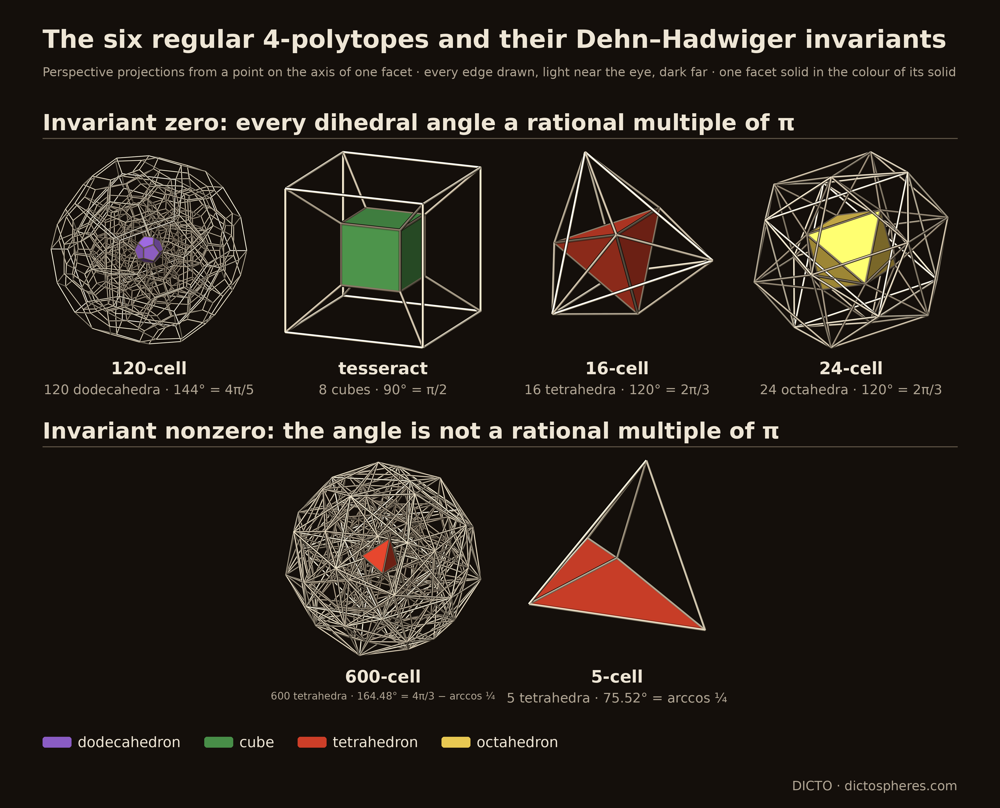
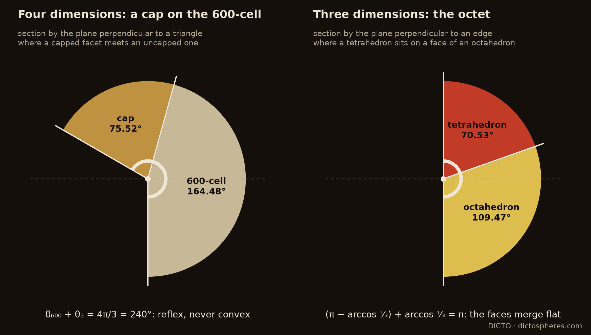
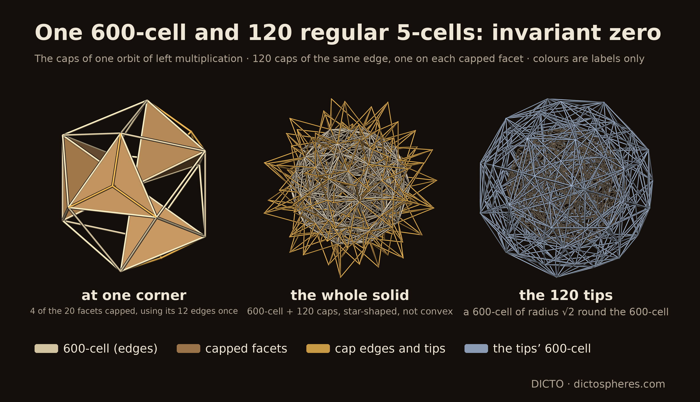

Machine-checked for the six regular polytopes, and one 600-cell balanced by 120 regular 5-cells
Version 2 redraws the figures so that lines behind solid faces are hidden; no result changes.
Cut a solid into pieces and rearrange them: the volume stays. Dehn found a second quantity that stays, built from the edges and the angles between faces. In four dimensions the same quantity is built from the flat two-dimensional faces where two cells meet, and it sorts the six regular four-dimensional solids into two groups that can never be cut into one another.
By the end of this paper the reader will know three things: that cutting cannot change this quantity, proved by a computer in every dimension; which two of the six regular four-dimensional solids it keeps apart; and why 120 regular 5-cells cancel one 600-cell. In ℝ⁴ volume and this invariant decide which solids can be cut into which (Jessen [6]), yet no machine-checked proof of the invariant in four or more dimensions was found in the sources checked (§8). The approach is the Dehn Canon's [19], carried to every dimension; the steps are the bridge (§3), the six regular 4-polytopes (§4), the 5-cell against the 600-cell (§5) and the cap sets in the 600-cell's own structure (§6). The news: cutting cannot change the Dehn–Hadwiger invariant; it sets the 5-cell and the 600-cell apart from the other four regular 4-polytopes and from each other, and because their angles add to 4π/3, 120 regular 5-cells exactly cancel one 600-cell. One 600-cell, 120 5-cells, invariant zero; and 120 is also the number of its corners. The angle relation was first seen by computation, in the study that weighed this paper's formal entry, and then proved (Proposition 8).
Hilbert asked in 1900 whether two solids of equal volume can always be cut into each other [2]. Dehn answered no [1]: the regular tetrahedron and the cube differ in a quantity that cutting cannot change, now written, after Jessen [5], as Σ (edge length) ⊗ (dihedral angle) in ℝ ⊗ℚ (ℝ/ℚπ). Sydler proved in 1965 that volume and this invariant decide scissors congruence in space [12]. Hadwiger defined invariants of the same kind in every dimension k: the first of them is the sum Σ f(α) V(A′) over the faces A′ of dimension k − 2, with V(A′) their (k − 2)-dimensional volume and f an additive function of the angle α with f(π) = 0 [3, §§II–IV, (7b)], and he proved that the regular simplex and the cube of equal volume are not scissors congruent in any dimension k ≥ 3 [3, §V]. In ℝ⁴ volume and the invariant of the 2-faces are enough (Jessen [6]; see also Dupont and Sah [7], who treat scissors congruence in every dimension with group homology). The theory is told at book length by Boltianskii [9], Sah [10] and Dupont [11].
This paper is the four-dimensional sequel to the Dehn Canon [19], which proved Dehn's direction in Lean in ℝ³ with the invariant read from the solid. Here the same reading is made in every finite dimension, the bridge from cutting to the invariant is proved there, and the invariant is computed for the six regular 4-polytopes of Schläfli [13]: the 5-cell, the tesseract, the 16-cell, the 24-cell, the 120-cell** and the 600-cell*.
What carries over from three dimensions, and what does not. The Canon's reading of the invariant from the set carries over, with its line replaced by a space of codimension 2, and so do its dissection modules (§3). The face-sum identity, a Lean theorem in ℝ³ [19, Theorem 6″], is not proved here for ℝ⁴ (§4), and Jessen's converse is cited, not formalized (§7). The octet is a near miss: in ℝ³ one octahedron and two regular tetrahedra balance and can form a convex solid; in ℝ⁴ the angles add to 4π/3 instead of π, so the balanced union is never convex (Figure 2). Two more mark the edges: the 120-cell has invariant zero although it does not fill space (§4), and the 5-cell's group S5 inside the 600-cell is not the capped solid's (Proposition 18).
How results are marked. Lean: a theorem of the Lean files, compiled with no sorry and only the axioms propext, Classical.choice and Quot.sound (§7). Exact: proved by a computation in exact arithmetic (rationals and ℚ(√5), no floating point), with the scripts and logs in the data link. By hand: a proof on paper. Computed: a floating-point computation, not a proof. Cited: a published theorem used as stated. Throughout, φ = (1 + √5)/2, θ5 = arccos(1/4), and the angle of a polytope at a 2-face is its interior dihedral angle.
* The 600-cell (Schläfli, 1852) is named the White Queen in DICTO's books. ** The 120-cell (Schläfli, 1852) is named the Red Queen in DICTO's books.
First, the two theorems. The first is the machine-checked part: the invariant cannot be changed by cutting, four of the six regular solids have invariant zero and two do not. The second uses the two nonzero ones against each other.
Theorem 1 (the Dehn–Hadwiger invariant, machine-checked). Lean. Let dehnHadwiger be the invariant of a subset of a finite-dimensional real inner product space read from the set itself (Definition 1).
(a) The bridge. If P and Q are convex polytopes and P is cut into finitely many convex polytopes that, moved by isometries, fill Q (Definition 2), then dehnHadwiger P = dehnHadwiger Q. For finite unions of convex polytopes with disjoint interiors, the sum of the invariants over the pieces does not depend on the dissection and is kept in the same way.
(b) Zero. In ℝ⁴ the tesseract, the 16-cell, the 24-cell and the 120-cell have invariant 0.
(c) Nonzero. The 5-cell has invariant A5 ⊗ [θ5] and the 600-cell A600 ⊗ [4π/3 − θ5], with A the area (two-dimensional Hausdorff measure) of the points where the polytope has that angle class; both are nonzero, and θ5 = arccos(1/4) is not a rational multiple of π.
(d) Across the split. No similar copy of the 5-cell, and no similar copy of the 600-cell, is scissors congruent to a similar copy of the tesseract, the 16-cell, the 24-cell or the 120-cell.
(e) The two nonzero ones. No similar copy of the 5-cell is scissors congruent to a similar copy of the 600-cell.
Proof. (a) is Theorem 4 and Corollary 4′, (b) and (c) Theorem 6 and Lemma 7, (d) and (e) Corollary 9. ∎
Theorem 2 (120 5-cells balance one 600-cell). Exact, by hand and cited where marked.
(a) The angle relation. The dihedral angle of the 600-cell is θ600 = 4π/3 − θ5 (also Lean, adj_class).
(b) The balance. A regular 600-cell of edge a and n regular 5-cells of edge b have total invariant zero if and only if n b² = 120 a². With equal edges, n = 120.
(c) The caps. Left multiplication by the 600-cell's 120 vertices, as unit quaternions, splits its 600 facets into 5 orbits of 120. Put on each facet of one orbit a regular 5-cell of the same edge, outward. Then no two capped facets share a triangle, every one of the 720 edges lies in exactly one capped facet, every corner in exactly 4, and the 120 tips are the corners of a regular 600-cell of circumradius √2 times the first. The union is star-shaped from the centre and not convex; it keeps 1440 rotations of the 600-cell and no reflection (computed).
(d) A cube. The union has volume 5√5 φ² a⁴ ≈ 29.27051 a⁴ and invariant zero, so it is scissors congruent to a 4-cube of edge 53/8√φ a ≈ 2.325989 a (cited: Jessen's theorem in ℝ⁴ [6, 7]; existence only, no dissection is given).
Proof. (a) is Proposition 8, (b) Proposition 10, (c) Proposition 11 and Theorem 12, (d) Proposition 13. ∎
The first step is the bridge from cutting to the invariant. At a point on a flat two-dimensional face of a four-dimensional solid, look across the face: the solid fills a wedge, and the wedge's opening is the angle between the two cells that meet there. As in the Dehn Canon, the computer measures that opening by area, so it reads the faces off the set without being told them.
Definition 1 (dehnHadwiger, DH1Def.lean). Let E be a real inner product space of finite dimension n, P ⊆ E and x ∈ P. The cone of directions at x is the set of v with x + tv ∈ P for some t > 0; its lineality space K is the span of the v with v and −v both in the cone. When K has dimension n − 2, the angle at x is 2π × (area of the cone inside the unit disc of the plane K⊥) / (area of that disc), and the class of x is this angle modulo ℚπ; at every other point the class is 0. The invariant is
dehnHadwiger P = Σθ ((n − 2)-dimensional Hausdorff measure of the points of class θ) ⊗ θ ∈ ℝ ⊗ℚ (ℝ/ℚπ),
the sum over the classes that occur (a finite sum for convex polytopes).
In ℝ⁴ the points with a plane as lineality space are the relative interior points of the 2-faces (the ridges), and the measure is area: this is Hadwiger's codimension-2 sum [3], in Jessen's tensor form [5]. Definition 1 is the Dehn Canon's definition [19, Definition 1] with the line replaced by a space of codimension 2; the Canon's modules on convex polytopes, cones and dissections (13 files) are reused unchanged.
Definition 2 (ScissorsCongruent, from the Canon). A convex polytope is a bounded intersection of finitely many closed half-spaces. P and Q are scissors congruent when P is the union of finitely many convex polytopes pk with pairwise disjoint interiors and Q is the union of their images gk(pk) under isometries gk of the space (reflections allowed), again with pairwise disjoint interiors. Q is a similar copy of P when Q = g(aP) with a > 0 and g an isometry.
Lemma 3 (angles from normals, cuts, motions, size). Lean (DH2Cut to DH5Scale). (i) The wedge of two half-spaces with independent outward normals a1, a2 has angle π − ∠(a1, a2), in every finite dimension (wedgeAngle_two_planes'). (ii) A hyperplane cuts a convex polytope into two whose invariants add up to the invariant of the whole (dehnHadwiger_cut): on the cut, the new ridges carry angles θ and π − θ on the two sides, which cancel modulo ℚπ; an old ridge goes to one part, or is divided by the hyperplane along a set of area zero, or lies in the hyperplane, where its angle splits into two that add up to it. (iii) Isometries keep the invariant (dehnHadwiger_image), and scaling by a > 0 multiplies it by an−2 (dehnHadwiger_smul_set).
Theorem 4 (the bridge). Lean (dehnHadwiger_eq_of_scissorsCongruent, DH3Bridge.lean). Scissors-congruent convex polytopes have the same Dehn–Hadwiger invariant, in every finite-dimensional real inner product space.
theorem dehnHadwiger_eq_of_scissorsCongruent {P Q : Set E} (hP : IsPoly P) (hQ : IsPoly Q)
(h : ScissorsCongruent P Q) : dehnHadwiger P = dehnHadwiger QProof (outline). By Lemma 3 (ii) the invariant is additive over every dissection of a convex polytope into convex polytopes (dehnHadwiger_dissection): two dissections have a common refinement by the hyperplanes of all the pieces, as in the Canon [19, §4]. By Lemma 3 (iii) the moved pieces keep their invariants. ∎
Corollary 4′ (finite unions). Lean (dehnHadwigerSum_eq_of_scissors). For a finite union of convex polytopes with disjoint interiors, the sum of the invariants over the pieces does not depend on the dissection into convex polytopes, and is the same for every set obtained by moving the pieces. We call this sum the invariant of the union.
The second step is the six regular solids. Every regular four-dimensional solid has one angle between neighbouring cells. If that angle is a whole-number fraction of a half turn, the invariant is zero; if not, it is not. Four of the six have such fractions; the 5-cell and the 600-cell do not.
Table 1 lists the six in the order dodecahedron, icosahedron, cube, tetrahedron, octahedron of their three-dimensional analogues (the 120-cell {5, 3, 3} for {5, 3}, the 600-cell {3, 3, 5} for {3, 5}, the tesseract, the 5-cell, the 16-cell {3, 3, 4} for {3, 4}), with the 24-cell, which has none, last. The Lean files define each by its facet normals, as {x : ⟨n, x⟩ ≤ 1} (§7): the tesseract [−1, 1]⁴, the 16-cell |x1| + … + |x4| ≤ 1, the 24-cell |xi| + |xj| ≤ 1, the 5-cell by five normals of length 4 with dot products −4, the 120-cell by the 120 corners of a 600-cell and the 600-cell by the 600 corners of a 120-cell, both in ℤ[φ]. The counts and angles of Table 1 were recomputed for this paper in exact arithmetic from corner coordinates (scripts/exact4d.py): the facets are found from the facet normals, the ridges as the vertex sets shared by two facets, and the angle at each ridge from the two normals, one angle per polytope.

scripts/fig_scenes.py, with asserts that every edge is drawn at its exact length and that the coloured facet has the right number of corners). Each is projected in perspective from a point on the axis of one facet, outside the polytope, onto the 3-space through its centre; edges run from light (near the eye in four dimensions) to dark (far). The facet farthest from the eye, small and central, is drawn solid in the app colour of its solid: dodecahedron violet, cube green, tetrahedron red, octahedron yellow; for the 16-cell and the 5-cell, whose tetrahedra are large in any such view, a far facet is drawn solid. Solid faces hide the edges behind them; in the 120-cell and the 600-cell the small facet is drawn over the dense edges, so that it shows. Below each name: the facets and the dihedral angle. Upper row: invariant zero (Theorem 6 (i)); lower row: nonzero (Theorem 6 (ii), (iii)).| polytope | counts | facets, ridges | cos of the dihedral angle | angle | in ℚπ | invariant |
|---|---|---|---|---|---|---|
| 120-cell | 600, 1200, 720, 120 | dodecahedra, pentagons | −(1 + √5)/4 | 144° = 4π/5 | yes | 0 |
| 600-cell | 120, 720, 1200, 600 | tetrahedra, triangles | −(1 + 3√5)/8 | 164.48° = 4π/3 − θ5 | no | 300√3 a² ⊗ [4π/3 − θ5] = −300√3 a² ⊗ [θ5] |
| tesseract | 16, 32, 24, 8 | cubes, squares | 0 | 90° = π/2 | yes | 0 |
| 5-cell | 5, 10, 10, 5 | tetrahedra, triangles | 1/4 | 75.52° = θ5 | no | (5√3/2) a² ⊗ [θ5] |
| 16-cell | 8, 24, 32, 16 | tetrahedra, triangles | −1/2 | 120° = 2π/3 | yes | 0 |
| 24-cell | 24, 96, 96, 24 | octahedra, triangles | −1/2 | 120° = 2π/3 | yes | 0 |
Theorem 6 (the invariants of the six). Lean (dehnHadwiger_tesseract, dehnHadwiger_cell16, dehnHadwiger_cell24, dehnHadwiger_cell120, dehnHadwiger_cell5_eq, dehnHadwiger_cell5_ne_zero, dehnHadwiger_cell600_eq, dehnHadwiger_cell600_ne_zero).
(i) The tesseract, the 16-cell, the 24-cell and the 120-cell have invariant 0.
(ii) dehnHadwiger(5-cell) = A5 ⊗ [arccos(1/4)] ≠ 0.
(iii) dehnHadwiger(600-cell) = A600 ⊗ [4π/3 − arccos(1/4)] ≠ 0.
theorem dehnHadwiger_cell600_eq : dehnHadwiger cell600 =
(μH[(finrank ℝ R4 - 2 : ℕ)]
{x | ridgeAngle cell600 x = Submodule.Quotient.mk (4 * Real.pi / 3 - Real.arccos (1 / 4))}).toReal
⊗ₜ[ℚ] (Submodule.Quotient.mk (4 * Real.pi / 3 - Real.arccos (1 / 4)) : Angle)Proof (outline). At a ridge point exactly two facet inequalities are tight, and Lemma 3 (i) gives the angle from their normals. For the tesseract, the 16-cell and the 24-cell the normals are whole-number vectors, and the angle is π/2 or 2π/3; for the 120-cell, whose normals are the corners of a 600-cell in ℤ[φ], it is 4π/5. Each is a rational multiple of π, so every term of Definition 1 is zero. For the 5-cell any two of the five normals meet at arccos(−1/4), and the angle is π − arccos(−1/4) = arccos(1/4). For the 600-cell the hard step is to know which two facets are tight at a ridge point: they must be neighbours across a triangle (cell600_pair). If a neighbour of the first tight facet is tight, it is the second; otherwise the point is a positive barycentric combination of the four corners of the first facet, and the second facet would contain all four, which no facet does. The 600 normals, 120 corners and, for every facet, its four corners and four neighbours are exact ℤ[φ] data checked by the Lean kernel (decide +kernel). Two neighbouring normals, of squared length 8 with dot product −2 + 6φ, give the class of 4π/3 − arccos(1/4) (adj_class). The areas are positive because each set of ridge points contains a small square (area_pos_of_patch), and x ↦ x ⊗ [θ] is injective when [θ] ≠ 0 (Lemma 7), since ℝ/ℚπ is a ℚ-vector space. ∎
In the Lean statements the areas are the Hausdorff measures of the sets of ridge points, which is what Definition 1 sums; that they equal the sums of the ridge areas, 10 · (√3/4) a² = (5√3/2) a² for the 5-cell and 1200 · (√3/4) a² = 300√3 a² for the 600-cell of edge a (Table 1), is the face-sum identity of Hadwiger's form, proved in Lean for ℝ³ in the Canon [19, Theorem 6″] but not here for ℝ⁴. The values in Table 1 are exact face sums; no theorem of this paper needs them except Theorem 2, which is not a Lean theorem.
Lemma 7 (θ5 is not a rational multiple of π). Lean (arccos_quarter_not_ratPi). arccos(1/4) ∉ ℚπ.
Proof. If arccos(1/4) = rπ with r rational, then cos(rπ) = 1/4 is rational, and by Niven's theorem [15] in Mathlib's form [16] it lies in {0, ±1/2, ±1}. ∎ (Hadwiger used the same fact [3, §V].)
Proposition 8 (the angle relation). Lean (adj_class) and exact. θ600 = 4π/3 − θ5; so θ600 ≡ −θ5 modulo ℚπ.
The two nonzero angles are tied together: the 600-cell's angle and the 5-cell's angle make exactly two-thirds of a full turn.
Proof (by hand). cos θ5 = 1/4 and cos θ600 = −(1 + 3√5)/8 (Table 1). Then sin θ5 sin θ600 = (15 − 3√5)/32, since both are positive and the square of the right side, (270 − 90√5)/1024, equals (1 − 1/16)(1 − (46 + 6√5)/64). So cos(θ5 + θ600) = −(1 + 3√5)/32 − (15 − 3√5)/32 = −1/2. As cos θ5 < 1/2 and cos θ600 < −√3/2, θ5 > π/3 and θ600 > 5π/6, so the sum lies between 7π/6 and 2π, where only 4π/3 has cosine −1/2. ∎ The same relation was found in the pre-score study by computation and proved there in sympy (2026-11-20-palomar-next-prescore, relation_600_5.py).
Corollary 9 (non-congruence). Lean (similarCell5_not_scissorsCongruent, similarCell600_not_scissorsCongruent, similarCell5_not_scissorsCongruent_similarCell600). Theorem 1 (d) and (e) hold.
Proof. A similar copy g(aP) has invariant a² · dehnHadwiger P (Lemma 3 (iii)), so similar copies of the 5-cell and of the 600-cell are nonzero and those of the other four are zero, and Theorem 4 separates them. A copy of the 5-cell has invariant s ⊗ [θ5] with s > 0, a copy of the 600-cell t ⊗ [4π/3 − θ5] = −t ⊗ [θ5] with t > 0; they are equal only if (s + t) ⊗ [θ5] = 0, which Lemma 7 excludes. ∎
What was to be expected. Lagarias and Moews proved that a polytope that fills ℝn with congruent copies of itself has all its Dehn invariants zero except volume, and in dimension at most 4 is scissors congruent to a cube [8]. The tesseract, the 16-cell and the 24-cell fill ℝ⁴, so their zero invariants are expected; the 120-cell and the 600-cell do not fill space, and only the 120-cell's zero comes from its rational angle alone. That the regular 5-cell is not scissors congruent to the 4-cube is Hadwiger's 1954 theorem for k = 4 [3, §V]. By Jessen's theorem in ℝ⁴ [6, 7] (cited, not formalized), each of the four polytopes with invariant zero is scissors congruent to the 4-cube of the same volume; the Lean files prove only the direction from cutting to the invariant.
The third step turns the two nonzero solids against each other. The 5-cell's invariant points one way and the 600-cell's the other. How many 5-cells does it take to cancel one 600-cell? With equal edges exactly 120, which is the number of the 600-cell's corners. They sit on its facets in a pattern that uses every edge once.
Proposition 10 (the balance). Exact, by hand from Table 1. A 600-cell of edge a and n 5-cells of edge b have total invariant (300√3 a² ⊗ [4π/3 − θ5]) + n (5√3/2) b² ⊗ [θ5] = (5√3/2)(n b² − 120 a²) ⊗ [θ5], which is zero if and only if n b² = 120 a² (Lemma 7). With b = a this is n = 120. If b/a = p/q in lowest terms and n is a whole number, p² divides 120 = 2³ · 3 · 5, so p = 1 (n = 120 q²) or p = 2 with q odd (n = 30 q²); the fewest 5-cells is n = 30, of edge b = 2a.
The total is the invariant of any union of the pieces with disjoint interiors (Corollary 4′). With equal edges a 5-cell fits exactly on a facet of the 600-cell, and the natural union puts it there, as a cap.
Proposition 11 (caps). Exact and by hand. Put a regular 5-cell of edge a outward on a facet of the 600-cell of edge a (its cap). (i) The cap lies in the cone from the centre over its facet, and these cones do not overlap; so any set of caps gives a union with disjoint interiors, star-shaped from the centre. (ii) Where a cap meets an uncapped facet across a triangle, the interior angle of the union is θ5 + θ600 = 4π/3 = 240°, more than π, so the union is not convex for any nonempty set of caps (Figure 2). Where two caps would share a triangle the angle would be 4π/3 + θ5 ≈ 315.52°, less than 2π. (iii) For the union of the 600-cell with any set of caps of which no two share a triangle, the sum of Definition 1 over its own ridges gives the same total as Proposition 10: on a capped facet's 4 triangles the angle is 4π/3 ∈ ℚπ and contributes nothing, every other old triangle keeps θ600, and each cap adds 6 side triangles at θ5.
Proof. (i) The cap's tip lies on the ray from the centre through the facet's centroid, at distance √2 from the centre for circumradius 1 (Theorem 12), and its other corners are the facet's; the cone over the facet contains all five, hence the cap. The cones over the facets of a convex polytope from an interior point have disjoint interiors. (ii) by Proposition 8. (iii) With c capped facets, sharing no triangle: 1200 − 4c old triangles at θ600 ≡ −θ5, 4c at 4π/3 and 6c cap sides at θ5, all of area (√3/4) a²; the sum is (√3/4) a² (−1200 + 4c + 6c) ⊗ [θ5] = (√3/4) a² (10c − 1200) ⊗ [θ5], zero exactly when c = 120. ∎ (The study checked the case c = 120 directly from the solid's ridges: 720 at θ600, 480 at 4π/3, 720 cap sides at θ5 [checks/dehn600.py].)

scripts/fig_angles.py).Here the comparison with three dimensions fails. The comparison in Figure 2 is the octet: one octahedron and two regular tetrahedra of the same edge have Dehn invariant zero, since 12 edges at π − arccos(1/3) cancel 2 × 6 edges at arccos(1/3), and the union can be convex (tetrahedra on two opposite faces give a rhombohedron with angles of 60°). In ℝ⁴ the angles add to 4π/3 instead of π, so the balanced union is never convex. Which caps to take? With equal edges, Proposition 11 (iii) asks for 120 facets, no two sharing a triangle. The 600-cell offers a natural choice.
Theorem 12 (the cap set). Exact (scripts/exact4d.py, with the study's checks/apexes.py), by hand for (iv), computed for (v). Take the 600-cell's corners as the 120 unit quaternions of the binary icosahedral group 2I (circumradius 1, edge a = 1/φ) [21]. Left multiplication by an element of 2I is a rotation of ℝ⁴ that maps the 600-cell to itself.
(i) It splits the 600 facets into 5 orbits of 120.
(ii) In each orbit no two facets share a triangle, every edge of the 600-cell lies in exactly one facet, and every corner in exactly 4.
(iii) The cap on a facet F has its tip at t(F) = (1/φ²) × (the sum of the four corners of F), at distance √2 from the centre, and is a regular 5-cell of edge a.
(iv) For one orbit, the 120 tips are the corners of a regular 600-cell of circumradius √2: they are 2I · t0, the 600-cell turned by right multiplication by t0/√2 and scaled by √2.
(v) The union of the 600-cell with the caps of one orbit keeps 1440 of the 600-cell's 14400 symmetries, all rotations; it is chiral, and its mirror image is the union for an orbit of right multiplication.
The rotations that move the 600-cell's corners into one another also move the chosen facets into one another, and with them the caps; so the tips of the caps are themselves the corners of a turned, larger copy of the 600-cell.
Proof. (i)–(iii) by exact computation in ℚ(√5) on the 120 quaternions (all five orbits; Figure 3 (a) shows (ii) at one corner: 4 capped facets among the 20, using its 12 edges once). For (iii): the centroid c of a facet has |c|² = (7 + 3√5)/16 = φ⁴/8, and the height of a regular 5-cell of edge a over a facet is a√10/4; the tip is (1 + (a√10/4)/|c|) c = (4/φ²) c, with |4c/φ²|² = 2. (iv) Each cap is fixed by its facet and the centre, so a rotation g that maps F to gF maps t(F) to t(gF) = g t(F). For the orbit of F0 the tips are therefore {g t0 : g ∈ 2I}, the image of the 600-cell's corner set under the map x ↦ x t0; right multiplication by a quaternion of length √2 is √2 times a rotation. (v) is the study's count over the 600-cell's 14400 symmetries, in floating point (checks/dehn600.py), and the mirror relation is checked exactly there (checks/apexes.py). ∎

scripts/fig_scenes.py, with asserts on every count of Theorem 12). (a) The 20 facets at one corner, projected along the corner's axis onto the 3-space perpendicular to it: the corner at the centre and its 12 neighbours, the corners of an icosahedron; the 4 capped facets (bronze), their tips and cap edges (amber); each of the 12 edges at the corner lies in exactly one capped facet. (b) The whole solid in perspective from a point on the same axis at distance 3: the 720 edges of the 600-cell (cream, light near the eye), the 480 cap edges and the 120 tips (amber). (c) The 120 tips and the 720 edges of their own 600-cell (blue-grey), of edge √2 a, round the 600-cell (dark), at the scale of (b). Colours are labels only; none of these is one of the five solids of the app colours.Proposition 13 (volume, and a cube). Exact; the last sentence cited. For edge a, V(600-cell) = (25/4) φ³ a⁴ = (25/4)(2 + √5) a⁴ ≈ 26.47542 a⁴, V(5-cell) = (√5/96) a⁴, 120 5-cells (5√5/4) a⁴ ≈ 2.79508 a⁴, and the capped solid (25 + 15√5)/2 a⁴ = 5√5 φ² a⁴ ≈ 29.27051 a⁴. The 4-cube of the same volume has edge (5√5 φ²)1/4 a = 53/8√φ a ≈ 2.325989 a. The capped solid and that cube have equal volume and invariant zero, so by Jessen's theorem in ℝ⁴ [6, 7] they are scissors congruent. For the n = 30, b = 2a balance of Proposition 10 the volume is (25/2 + 45√5/4) a⁴ ≈ 37.65576 a⁴, and the cube's edge ≈ 2.477182 a.
Proof. Each volume is a sum of pyramids from the centre over the facets: V = (1/4) Σ (inradius × facet volume). For the 600-cell with a = 1 the inradius is φ³/(2√2) and the tetrahedron has volume 1/(6√2), so V = 600 φ³/96; for the 5-cell the inradius is √10/20 and V = 5 · √10/(4 · 6√2 · 20) = √5/96. The sum is (50 + 25√5)/4 + 5√5/4 = (25 + 15√5)/2 = 5√5 φ², and (5^(3/8)√φ)⁸ = 125 φ⁴ = (5√5 φ²)². ∎ Jessen's theorem gives existence only; no dissection is constructed here.
Last, the cap sets are not new objects in the 600-cell's world. Their centres pick out one of the ten 600-cells inscribed in the 120-cell, the caps lie on the 600-cell's own mirrors, and at a corner they draw Hess's compound of five tetrahedra.
Write P for the 600-cell of Theorem 12 (circumradius 1), and call the five orbits of left multiplication the left sets and the five of right multiplication, their mirror images, the right sets. The dual 120-cell is the 120-cell whose 600 corners are the centres of P's facets, the 120-cell of DICTO's #65 [25]: nearest centres are exactly the facets that share a triangle. P has 60 mirrors, the hyperplanes through the centre perpendicular to its corners, and 300 cross walls, perpendicular to its facet centres; the plate of a 2-face is the 3-space through it and the centre (#110 [26]). Every statement below was found in study 2026-11-20-600cell-5cell-zero, Part 2 (checks/part2_queens.py, 50 checks, exact arithmetic in ℚ(√5) and integer tables of quaternion products); those marked † were recomputed for this paper (scripts/part2.py, run by the audit).
Proposition 14 (the cap sets, the compound and the cosets). Exact.
(i) † Every facet lies in one left set and one right set; each left set meets each right set in 24 facets; the ten sets are distinct, and the 120 centres of each lie on a regular 600-cell (the same inner products as P's corners, 12 nearest neighbours each). So, by their centres, the ten sets are Coxeter's compound of ten 600-cells inscribed in the 120-cell [14, Table VII; 28], placed in the dual 120-cell; the left sets are one of its two states of five, the right sets the other. This is #110's Theorem B(a) [26] read in the dual 120-cell.
(ii) The right symmetries of a left set form a binary tetrahedral group 2T of order 24 †, and the left set of a facet depends exactly on the coset of 2T in 2I that carries it: the five sets are the five cosets of 2T in 2I, the five 2T's being conjugate in 2I [21]. The rotations x ↦ l x r−1 with l ∈ 2I and r in the set's 2T keep the set: 120 · 24 / 2 = 1440 †, the count of Theorem 12 (v), so the symmetry group of the capped solid is ±[I×T] in Conway and Smith's notation [21].
Proposition 15 (the tip 600-cell and the hull). Exact.
(i) Scaled to radius 1, the tips of a left set are the centres of its facets, so the tip 600-cell is √2 times one of the ten 600-cells inscribed in the dual 120-cell. It is P turned by right multiplication, by the unit quaternion of a facet centre: P·ĉ, and not u·P for any unit quaternion u. The smallest such turn has cos² = (7 + 3√5)/16 ≈ 0.85676 †, the angle from a corner to the nearest facet centre.
(ii) P lies strictly inside the tip 600-cell: the tip 600-cell's inradius² is (7 + 3√5)/8 > 1 †. So the convex hull of the capped solid is the tip 600-cell, and the solid fills 5√5 φ² / (25 φ³) = 1/(√5 φ) ≈ 0.27639 of it †.
(iii) Conversely P is inscribed in the tip 600-cell's dual 120-cell. The ten tip 600-cells (five left sets, five right) have ten different dual 120-cells, and these are all the 120-cells of P's size that hold P (#110, Theorem B(a) read the other way [26]).
Proposition 16 (the walls). Exact.
(i) † Every plate of the capped solid lies on one of P's 60 mirrors and on none of its cross walls: the 1200 old triangles (#110, Lemma 3a [26]) and the 720 cap sides. Each mirror carries 20 old triangles and 12 cap sides.
(ii) A cap side (tip, u, v) lies on the mirror perpendicular to the opposite edge wx of its facet †. That mirror also carries the pentagon of the dual 120-cell dual to wx (#107, Corollary 2 [27]), and the tip lies on the ray through one of its corners: on each mirror the 12 pentagons of #107 and the 12 cap sides pair off one to one.
(iii) Each cap has its 10 two-face plates on 10 different mirrors †, so every cap is hidden in P's mirrors in #110's sense [26], about P's centre. Every plate carries each ridge with its opposite, so the solid is of #110's heart kind (Lemma 1).
(iv) Each tip lies on 6 mirrors and on 27 cross walls †. The tip 600-cell's 1200 triangles lie on 60 of P's 300 cross walls, 20 on each, and none on P's mirrors †; conversely P's 60 mirrors are cross walls of the tip 600-cell (#110, Theorem B(c) and Table 4 [26]).
Proposition 17 (at a corner, shells and designs). Exact.
(i) The 20 facets round a corner are the 20 faces of its icosahedral vertex figure. The left sets split them into 5 sets of 4 †, each meeting all 12 neighbours once, and the face centres of each set form a regular tetrahedron †: the five make the compound of five tetrahedra (Hess, 1876 [30]) in the dodecahedron of face centres. The right sets give the mirror-image compound, and no tetrahedron is in both †.
(ii) The 15 shells of corners round one corner in DICTO's #63 [24] (sizes 20, 20, 30, 60, 60, 60, 20, 60, 20, 60, 60, 60, 30, 20, 20) each split into five equal parts among the left sets, and among the right sets.
(iii) P together with the unit tip 600-cell (240 points) is an 11-design, since both parts are (Goethals and Seidel [29]), but not a 12-design: the exact degree-12 zonal sum is 19800, not 0. The pair gives no new design.
Proposition 18 (what the cap sets are not). Exact. Four roots of P in an A4 pattern generate the 5-cell's group S5 (120 elements), which splits P's corners 20, 20, 20, 30, 30. It is the symmetry group of #110's solids A and B and of their polar duals [26]. (i) It is not the capped solid's group, and neither contains the other: they meet in exactly an A4 of 12 rotations, for every left set. (ii) Its 60 rotations permute the five left sets as the full alternating group A5, and its odd elements swap left sets with right sets. (iii) A has exactly 5 tetrahedral facets that are facets of P, one in each left set and one in each right set, and the 120 copies of A in P (A and −A for each of its 60 groups S5) take every facet exactly once: each copy is a transversal of both states, the dual form of #110's Theorem B′(f).
The 3D comparison of Figure 2 holds here too, up to convexity: the octahedron's 4 alternate faces cover its 12 edges once, tetrahedra on them give a regular tetrahedron of twice the edge, and the two choices form Kepler's stella octangula; in ℝ⁴ the five left sets cover the 720 edges once each and form one state of Coxeter's compound, but the capped solid is not convex, and its hull is the tip 600-cell.
The Lean code is in the study folder 2026-11-20-palomar-dehn4d (data link in the meta line): 15 modules, DH1 to DH15, 3,383 lines, on 13 modules of the Dehn Canon reused unchanged. Toolchain Lean v4.35.0-rc2 with Mathlib v4.35.0-rc2. The 14 theorems of Theorem 1, seen from the entry's statement file, depend on propext, Classical.choice and Quot.sound only (package/logs/axioms.log); there is no sorry, no native_decide and no added axiom. The 600-cell's data are checked by decide +kernel on flat records of whole numbers, with index tables and three generators of its symmetry.
| module | lines | what it adds |
|---|---|---|
| DH1Def | 358 | Definition 1 in every finite dimension |
| DH2Cut, DH3Bridge | 175, 137 | Lemma 3 (ii), (iii); Theorem 4; Corollary 4′ |
| DH4Pair, DH5Scale | 383, 72 | Lemma 3 (i): the angle from two normals; scaling and similar copies |
| DH6Cells | 188 | ℝ⁴; tesseract, 16-cell, 24-cell: invariant 0 |
| DH7Cell5, DH8Cell120 | 204, 176 | 5-cell (Lemma 7, Theorem 6 (ii)); 120-cell: invariant 0 |
| DH9Results | 31 | Corollary 9 for the 5-cell |
| DH10Ridge, DH11Cell600Defs | 169, 103 | tools for facets not pairwise adjacent; the 600-cell's 600 normals in ℤ[φ] |
| DH12Data | 731 | corners, facets and neighbours as kernel-checked data |
| DH13Cell600, DH14Cell600Area | 319, 247 | adj_class, cell600_pair; Theorem 6 (iii) |
| DH15Results600 | 90 | Corollary 9 for the 600-cell, and the 5-cell against it |
| all | 3,383 | 15 modules |
The fourteen statements are prepared as an entry for the Palomar registry, as the Dehn Canon's were [20]: a statement file of 300 lines with Mathlib as its only import, accepted locally by the comparator with three independent kernels (Lean's own, NanoDa and con-ron), and three altered copies (a changed constant, a changed definition, a proof replaced by sorry) each rejected. The entry has been submitted and is not yet registered.
Limits of what is stated. Pieces are convex polytopes, finitely many, moved by isometries, reflections included. The polytopes are the sets written in the files, by facet normals; their corners and edges are used as data for the 600-cell, but equality with the convex hull of the corners is not stated. The areas A5 and A600 are proved positive, not computed; the face-sum identity for convex polytopes in ℝ⁴ is not formalized. Theorem 2 is not in Lean, except its angle relation. Jessen's converse is not formalized; no statement of the files says that equal volume and equal invariant imply scissors congruence.
Known and used. Dehn's invariant and theorem [1]; Hadwiger's invariants in every dimension, their invariance and the regular simplex against the cube for every k ≥ 3 [3, §§II–V; 4]; Jessen's tensor form [5] and his theorem that volume and the invariant decide scissors congruence in ℝ⁴ [6], also in Dupont and Sah [7]; Lagarias and Moews on polytopes that fill space [8]; the monographs [9, 10, 11]; Sydler's converse in ℝ³ [12] (quoted, not used); the six regular 4-polytopes and their angles (Schläfli [13]; Coxeter [14, Table I(ii)]); Niven's theorem [15] in Mathlib [16]; Lean and Mathlib [17, 18]; the Dehn Canon's definitions and dissection modules [19]; the 600-cell's corners as the unit quaternions of 2I [21]; for §6, Coxeter's compound [14, 28], 2T in 2I and ±[I×T] [21], Hess's compound [30], Goethals and Seidel's designs [29], and DICTO's #63, #65, #107 and #110 [24–27]. The invariants of the six as zero or nonzero follow at once from their classical angles, and the simplex case is Hadwiger's; the relation θ600 = 4π/3 − θ5 is elementary trigonometry.
Formal proofs found. In Lean, three files treat Hilbert's third problem in dimension 3 only: FormalBook chapter 10 [22] in an abstract model of segments and angles, atlas-lean and undergraduate-math-lean with the Dehn invariant of a list of edges and the cube against the regular tetrahedron [23]; and the Dehn Canon [19, 20], in ℝ³. None has an invariant in dimension 4 or higher.
Claimed here, not found in the sources checked. A machine-checked proof, in any system, of the invariance of the Dehn–Hadwiger invariant under scissors congruence in every finite dimension, with the invariant defined from the set (Theorem 4, Corollary 4′); machine-checked invariants of the six regular 4-polytopes (Theorem 6) and the non-congruences of Corollary 9; a table of the invariants of the six (Table 1), and the relation θ600 ≡ −θ5 modulo ℚπ stated as a relation between invariants, which follow at once from classical angles, so no discovery is claimed for them; the balance of one 600-cell against 120 regular 5-cells of the same edge, and n b² = 120 a² in general (Proposition 10); the cap set of Theorem 12, which uses every edge once, and the regular 600-cell of radius √2 formed by its tips; the scissors congruence of the capped solid with a 4-cube of edge 53/8√φ a (Proposition 13, by Jessen's theorem); in §6, the reading of the edge-once cap sets as one state of Coxeter's compound through their centres, the tip 600-cell and the fact that the duals of the ten tip 600-cells are the ten 120-cells holding P, A's tetrahedra as transversals of both states, and the pairing of the cap sides with #107's pentagons. Found, and credited in §6: Coxeter's compound of ten 600-cells in the 120-cell [14, 28], the ten splits of the 600-cell into five 24-cells [28], the index 5 of 2T in 2I with five conjugates [21], the compound of five tetrahedra [30], and the designs [29].
Sources checked (20 November 2026). Mathematics: Hadwiger [3] read in the scan of the Göttingen digital library (all five pages; the invariants (7b), the necessary conditions (10), (11) of §IV, and §V on the simplex and the cube); Jessen [6] and Lagarias and Moews [8] through their zbMATH records (Zbl 0262.52004, Zbl 0824.52014) and, for [8], the publisher's abstract; Dehn [1], Jessen [5], Dupont and Sah [7] and Hadwiger [4] through Crossref records only; Boltianskii [9], Sah [10] and Dupont [11] as in the Dehn Canon's references (from Dupont's bibliography); Schläfli [13] and Coxeter [14] through Wikipedia ("Ludwig Schläfli", "600-cell", "5-cell"; Coxeter's Table I(ii) as cited there); the Encyclopedia of Mathematics, "Dehn invariant"; web searches for "600-cell" with "5-cell" or "pentachoron" and "Dehn invariant" or "scissors congruent", and for an augmented 600-cell with pentachoron caps (study 2026-11-20-600cell-5cell-zero: Calegari's notes, arXiv 1910.07112, 1410.7120, 2210.08082 and 1710.11247, Banchoff's Beyond the Third Dimension §5.8, R. Schwartz's notes on Jessen, Freire's star polychora pages); the pre-score study's record (2026-11-20-palomar-next-prescore, prior-art.md), where a survey of valuations (arXiv:2302.00416, a snippet only) gives a dimension-general argument for the simplex against the cube. Formal (20 November 2026): Mathlib (no Dehn invariant); GitHub code search, Lean, for "Dehn invariant", "Dehn Hadwiger" and "scissors congruent" (only the 3D files above, and files on Dehn surgery and Dehn functions, not relevant); the Isabelle AFP index (1,060 entries linked, searched by name; none on Dehn invariants, scissors congruence or Hilbert's third problem; Cube_Dissection is on cubes cut into unequal cubes) and code search in its GitHub mirror for "Dehn" and "scissors" (none relevant); Rocq/Coq code search for "Dehn invariant" (none) and "equidecomposable" (only the Banach–Tarski development); HOL Light, code search in its repository for "Dehn" and "scissors" (none); Mizar, the Mizar Mathematical Library's article list (no article on Dehn invariants, scissors congruence or polytopes of this kind) and one web search (none). For §6 (study Part 2): web searches for "600-cell" with 5-cell caps or augmented pentachora, for partitions of the 600-cell's cells into five sets of 120, for cosets of the binary tetrahedral group in 2I and for compounds of 600-cells in the 120-cell; Wikipedia, "600-cell", "120-cell", "Compound of five tetrahedra" (the source of the credit to Hess, 1876) and "Binary icosahedral group"; Freire's star polychora pages; Banchoff §5.8; Koca et al. on the snub 24-cell (arXiv 0906.2109); the Error Correction Zoo's 24-cell page; Denney et al. [28] as cited in #110. The 19 November formal search of the Dehn Canon [19, §9] covered Metamath and Naproche for dimension 3 as well.
Cutting cannot change the Dehn–Hadwiger invariant; it sets the 5-cell and the 600-cell apart from the other four regular 4-polytopes and from each other, and because their angles add to 4π/3, 120 regular 5-cells exactly cancel one 600-cell. So the 600-cell, which no cutting can turn into a cube of any size, comes back with its 120 caps as a solid that can be: unlike the octet in three dimensions it is never convex, yet by Jessen's theorem it is scissors congruent to a 4-cube. How to cut it is open.
Lean: the folder 2026-11-20-palomar-dehn4d (data link in the meta line), with lean/DehnHadwiger/ (DH1–DH15), the entry package (package/Challenge/DehnHadwiger4D.lean, package/palomar/formalization.yaml, the build, comparator and axiom logs under package/logs/) and the ℤ[φ] data generators (scripts/gen600.py, emit600.py, make_dh12.py). Exact checks: 2026-11-20-600cell-5cell-zero, checks/dehn600.py and checks/apexes.py with their logs (Theorem 2) and checks/part2_queens.py with its log (§6); 2026-11-20-palomar-next-prescore, checks/dihedral4d.py, rational_pi.py and relation_600_5.py (the angles). Beside this paper: scripts/exact4d.py (the six polytopes and the cap orbits in exact ℚ(√5) arithmetic), scripts/part2.py (the rechecks marked † in §6), scripts/fig_scenes.py, fig_angles.py, render3d.py, shots.mjs and fig_compose.py for the figures (asserts in data/fig-scenes.json), and scripts/audit.py, which recomputes every number of the text and tables, checks the theorem names against the Lean statement file and the axiom log, and checks the study logs.
DICTO · dictospheres.com